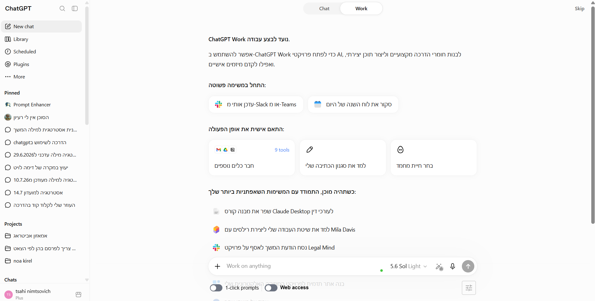
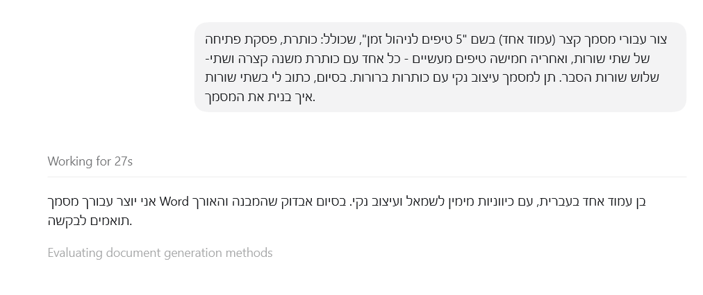
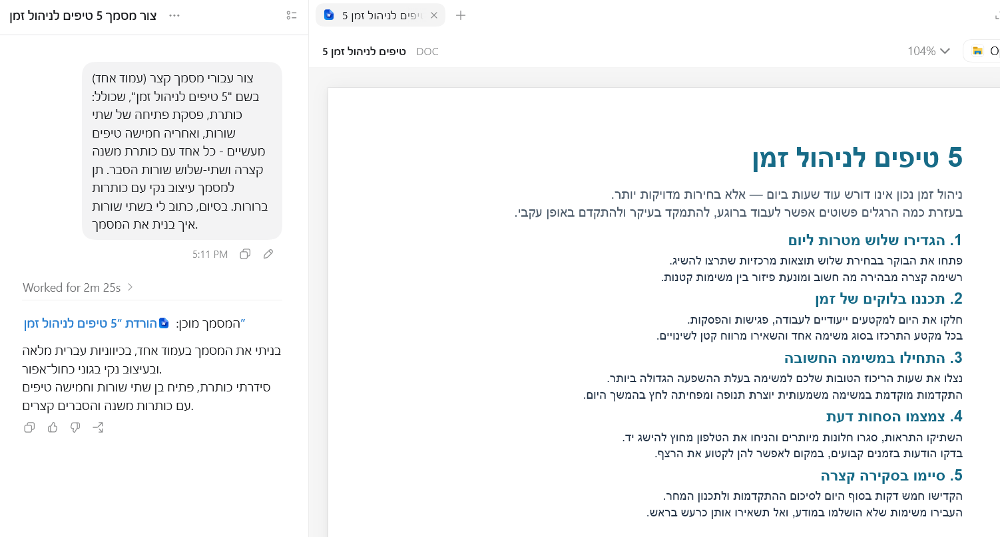
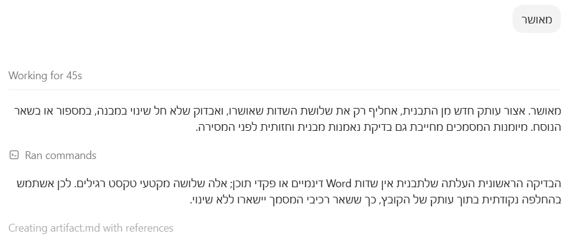
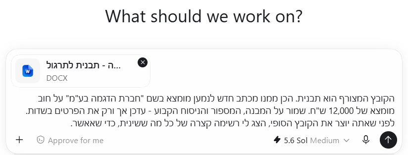
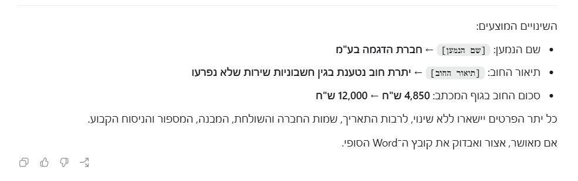
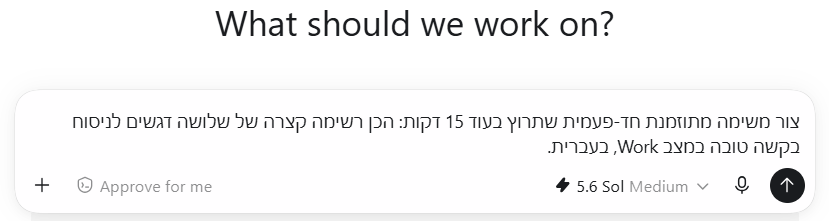
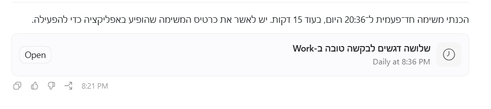
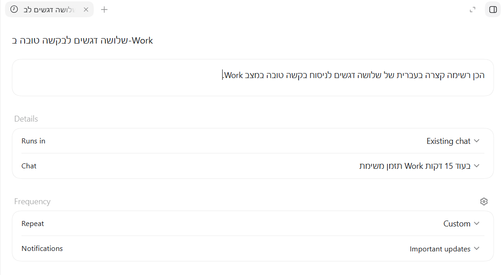
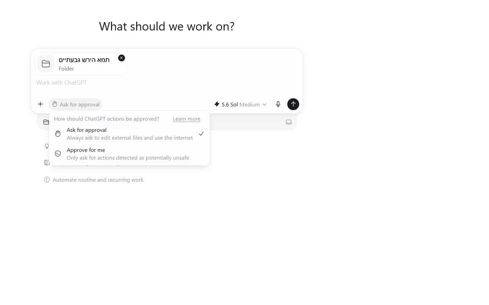

הכנה: שלוש בדיקות לפני שמתחילים
הדף הזה מיועד למי שקרא את המדריך המלא - הוא מזכיר, לא מלמד. לפני התרגיל הראשון, שלוש בדיקות של חצי דקה:
- עובדים מאפליקציית המחשב. כל התרגילים מבוצעים מתוך אפליקציית ChatGPT במחשב (Alt+Space פותח אותה) - לא מהדפדפן. מוודאים שרואים את הבורר Chat / Work ליד תיבת הכתיבה (פרק 03 במדריך).
- תרגיל 6 אפשרי רק באפליקציית המחשב (עבודה עם תיקייה מקומית). אם עוד לא התקנתם - פרק 02 במדריך מלווה אתכם, זה חמש דקות.
- שום חומר אמיתי. כל התרגילים כאן רצים על טקסט מומצא שכתוב בדף עצמו. אל תערבו בתרגול מסמכי לקוח - גם לא "רק כדי לנסות". (חריג יחיד: תרגיל 4 ניגש ליומן האישי שלכם - שלכם, לא של המשרד.)
זה הבורר שמוודאים שרואים ליד תיבת הכתיבה:

- 1בורר Chat/Work - כאן עוברים בין שני המצבים בלחיצה אחת.
- 2תיבת "Work on anything" - כאן מגדירים את היעד לביצוע, לא רק שואלים שאלה.
עוברים תרגיל-תרגיל לפי הסדר, או אחד בכל פעם - כל תרגיל עומד בפני עצמו. בכל תרגיל: מה מתרגלים, מה עושים, ואיך יודעים שהצלחתם.
תרגיל 1 - משימה ראשונה, קובץ ראשון
מה מתרגלים: את המעגל השלם של Work - מגדירים יעד, צופים בעבודה, מקבלים קובץ. (הוסבר בפרק 04 במדריך.)
- פותחים שיחה חדשה ומעבירים את הבורר ל-Work.
- מדביקים את הבקשה הבאה כמות שהיא, ושולחים:
כך זה נראה בזמן העבודה - ובסיומה (בצילומים: מסמך ההדגמה מפרק 04 במדריך; המסמך שלכם ייראה דומה במבנה):

- 1מיד אחרי השליחה מופיע חיווי "Working for..." שמתעדכן בזמן אמת, ומתחתיו כבר מתחילה להיכתב תשובת הביניים של המערכת.

- 1הכותרת שביקשנו - נוצרה בדיוק כפי שהוגדר בבקשה.
- 2כותרת משנה כחולה לכל סעיף, בעיצוב אחיד ונקי לאורך כל המסמך.
איך יודעים שהצלחתם: החיווי "...Working for" רץ וסופר, מתחלף בסוף ל-"...Worked for", ומופיע כרטיס קובץ. לחיצה עליו פותחת מסמך עם עשרה סעיפים ושורת ההערה. לקח כמה דקות? זה הקצב הנורמלי - Work מסיים את העבודה במקום למהר.
תרגיל 2 - מציצים למערכת בזמן שהיא עובדת
מה מתרגלים: לקרוא את יומן העבודה החי - ההרגל שהופך אתכם ממי שמחכה לתוצאה למי שמפקח על התהליך. (הוסבר בפרק 04, בטיפ על "Ran commands".)
- שולחים שוב את המשימה מתרגיל 1 - הפעם בשם קובץ אחר: "רשימת בדיקה לדיון הוכחות".
- בזמן שהחיווי "...Working for" רץ, לוחצים על החץ הקטן ליד "Ran commands".
- קוראים את השורות שנפתחות: אילו כלים המערכת מפעילה, ובאיזה סדר.
זה היומן שמציצים בו - החץ הקטן ליד Ran commands:

- 1השורה "Ran commands" - לוחצים על החץ הקטן לידה, והיומן נפתח. (הצילום מתוך הדגמת התבנית שבמדריך - אצלכם התוכן יהיה שונה, החץ באותו מקום.)
איך יודעים שהצלחתם: אתם יכולים לומר במילים שלכם דבר אחד שהמערכת עשתה בדרך לקובץ - למשל שהפעילה כלי ליצירת מסמך. זה כל התרגיל: מהרגע שראיתם את זה פעם אחת, שום ריצה של Work כבר לא תרגיש כמו קופסה שחורה.
תרגיל 3 - מסמך חדש מתוך תבנית
מה מתרגלים: את התרגיל הכי חשוב לעבודה משפטית - Work בונה גרסה חדשה מתוך קובץ קיים, בלי לשבור את המבנה. (הוסבר בפרק 05.)
- קודם מייצרים תבנית מומצאת - שולחים ב-Work את הבקשה הבאה:יצירת התבנית - להעתקהצור מסמך בשם "מכתב התראה - תבנית לתרגול" עם מבנה קבוע: כותרת, שדה [שם הנמען], שדה [תיאור החוב], שלושה סעיפים ממוספרים ושורת חתימה. כל הפרטים מומצאים.
- מורידים את הקובץ שנוצר למחשב.
- פותחים שיחת Work חדשה, מצרפים את הקובץ (גרירה לתיבה או כפתור ה-"+"), ומדביקים:
שני הרגעים החשובים של התרגיל - צירוף התבנית, ורשימת השינויים שעוצרת לאישור:

- 1קובץ התבנית מצורף ומופיע ככרטיס מעל הבקשה. שימו לב שהבקשה עצמה כוללת גם את רגע העצירה: "לפני שאתה יוצר את הקובץ הסופי, הצג לי רשימה של מה ששינית".

- 1כל שינוי מוצג במבנה של לפני ← אחרי - רואים בדיוק מה יוחלף בשדות, ומה יישאר כמות שהוא.
- 2"אם מאושר, אצור ואבדוק את קובץ ה-Word הסופי" - הקובץ לא נוצר בלי מילה מפורשת שלכם. עונים "מאושר", ורק אז Work ממשיך.
איך יודעים שהצלחתם: קיבלתם קודם רשימת שינויים לאישור (זה רגע העצירה שביקשתם - בדיוק כמו בדוגמת ההסכם בפרק 12), ורק אחרי אישורכם נוצר קובץ שנראה כמו התבנית - עם הפרטים החדשים בלבד.
תרגיל 4 - מחברים אפליקציה ראשונה
מה מתרגלים: חיבור Plugin ראשון, כדי ש-Work יוכל לשלוף מידע אמיתי מהעולם שלכם. (הוסבר בפרק 06.)
- מהמחשב (לא מהטלפון - הספרייה לא זמינה שם), לוחצים על Plugins בתפריט הצד.
- בוחרים אפליקציה אחת שאתם כבר עובדים איתה - היומן הוא התחלה טובה: ליומן משרדי מחפשים "Outlook Calendar", ולתרגול ראשון מתאים גם יומן אישי - ולוחצים על Install / "+".
- קוראים את בקשת ההרשאות לפני שמאשרים - זה אישור חד-פעמי לאפליקציה הזאת.
- פותחים שיחת Work וכותבים: "@" ואז שם האפליקציה, ומבקשים משהו פשוט - למשל "מה יש לי ביומן מחר?"
איך יודעים שהצלחתם: התשובה כוללת פרטים אמיתיים מהיומן שלכם - מידע שלא כתבתם בשיחה. זה ההבדל בין מערכת שיודעת רק מה שסיפרתם לה, למערכת שמחוברת לעולם שלכם.
מחברים כאן חשבון אישי שלכם - לא מערכות של המשרד ולא חומר לקוחות. חיבור מערכות משרדיות שייך לשיחה על מנוי Business ומעלה, כמוסבר בפרק 15. ואם החשבון שלכם משרדי ומנוהל - החיבור יבקש אישור של מנהל המערכת; התהליך המלא, כולל נוסח מוכן למנהל, מוסבר בפרק 06 במדריך.
תרגיל 5 - משימה מתוזמנת חד-פעמית
מה מתרגלים: עבודה שרצה בלי שאתם שם - בגרסה הקטנה והבטוחה ביותר שלה. (הוסבר בפרק 07.)
- פותחים שיחת Work חדשה (New chat), ומוודאים שהבורר למעלה עומד על Work.
- מדביקים בתיבת הכתיבה:בקשת המשימה המתוזמנת - להעתקהצור משימה מתוזמנת חד-פעמית שתרוץ בעוד 15 דקות: הכן רשימה קצרה של שלושה דגשים לניסוח בקשה טובה במצב Work, בעברית.
- ChatGPT יענה בהודעת אישור ויצרף כרטיס משימה. לוחצים על Open בכרטיס, בודקים בחלונית הפרטים שההוראה והמועד נכונים - ומאשרים.
- סוגרים, ולא מחכים ליד המסך - זו כל הפואנטה.
שלושת השלבים על המסך - הבקשה, האישור והבדיקה:

- 1הבקשה כולה במשפט אחד: מה להכין, שהמשימה חד-פעמית, ומתי לרוץ. לא צריך שום טופס - ChatGPT יבנה מזה את המשימה בעצמו.

- 1ChatGPT מאשר שהמשימה נוצרה בדיוק כפי שביקשנו - חד-פעמית, ל-20:36 - ומזכיר שנשאר צעד אחד: לאשר את הכרטיס. (השעה שבצילום היא מההדגמה במדריך; אצלכם תופיע השעה שביקשתם.)
- 2כרטיס המשימה שנוצר בתוך השיחה, עם שם שנגזר מהבקשה ותיאור תדירות מקוצר. את התדירות האמיתית בודקים תמיד בחלונית הפרטים, לא בכרטיס.
- 3כפתור Open - פותח את חלונית הפרטים של המשימה, שבה בודקים ומאשרים הכל.

- 1ההוראה שתרוץ בכל הפעלה, כפי ש-ChatGPT ניסח אותה מהבקשה שלנו. זהו שדה שאפשר לערוך - מה שכתוב כאן הוא מה שיקרה בפועל.
- 2בלוק Details - איפה התוצאות יופיעו: Existing chat פירושו שהתוצר יגיע לאותה שיחה שממנה יצרנו את המשימה.
- 3בלוק Frequency - התדירות הקובעת (כאן Custom, מותאמת לזמן שביקשנו) והגדרת ההתראות: Important updates אומר שתקבלו הודעה רק כשיש משהו ששווה לראות.
איך יודעים שהצלחתם: בשיחה מופיעים הודעת אישור וכרטיס משימה, ובחלונית הפרטים רשומה ההוראה עם המועד הנכון. אחרי שעת הריצה חוזרים לאותה שיחה - התוצר מחכה שם (המשימה מוגדרת Runs in: Existing chat).
סיימתם? מחקו את משימת התרגול - בדפדפן, בעמוד chatgpt.com/schedules, שם רואים את רשימת כל המשימות. מספר המשימות הפעילות מוגבל לפי המסלול (3 ב-Go, 5 ב-Plus, 15 ב-Pro, Business ו-Enterprise) - וחבל לבזבז מקום על תרגיל.
תרגיל 6 - תיקייה מקומית ואישור לפני כתיבה
מה מתרגלים: את הרגל הבטיחות החשוב ביותר - Work נוגע רק בתיקייה שפתחתם, ועוצר לאישור לפני כל שינוי. (הוסבר בפרק 09. דורש את אפליקציית המחשב.)
- צרו על שולחן העבודה תיקייה חדשה בשם
Work-Practice, ובתוכה קובץ טקסט בשםעובדות-לתרגול.txtעם שלוש השורות האלה:תוכן הקובץ - להעתקהפגישה ראשונה: 1.6.2026 סכום במחלוקת: 40,000 ש"ח (מומצא) מועד תגובה: 15.6.2026 - באפליקציית המחשב, במצב Work, פתחו את התיקייה הזאת.
- ודאו שפקד ההרשאות שמתחת לתיבת הכתיבה עומד על Ask for approval.
- מדביקים את הבקשה:הבקשה - להעתקהקרא את הקובץ שבתיקייה וצור לצדו קובץ חדש בשם סיכום.txt עם שלוש העובדות מסודרות בטבלה פשוטה.
כך נראית תיקייה מחוברת - Work רואה רק אותה, לא את כל המחשב:

- 1תיקיית עבודה מחוברת - Work רואה רק אותה, לא את כל המחשב.
- 2"Ask for approval" מסומן: כל עריכת קובץ או שימוש באינטרנט דורשים אישור.
איך יודעים שהצלחתם: לפני יצירת הקובץ החדש, Work עצר וביקש את אישורכם - זה הרגע שכל התרגיל קיים בשבילו. אחרי האישור, סיכום.txt מחכה בתיקייה, ושום קובץ אחר במחשב לא השתנה.
זה בדיוק המסך ששווה לצלם לתיעוד המשרדי: חלונית האישור שמראה שכתיבה לקובץ לא קורית בלי חתימה שלכם.
שאלות מהירות, ואיפה התשובה המלאה
לא רואים את הבורר Work? בווב ובמובייל - רק מ-Plus ומעלה; באפליקציית המחשב - לכולם. פרק 14 במדריך.
המשימה לוקחת הרבה זמן? נורמלי. Work מסיים עבודה, לא ממהר. פרק 04.
המשימה המתוזמנת לא רצה? אם היא תלויה בקבצים מקומיים - המחשב צריך להיות דלוק והאפליקציה פתוחה. פרק 07.
אילו נתונים מותר להזין? לתרגול - מומצאים בלבד. חומר לקוחות אמיתי - רק במנוי Business ומעלה, עם DPA. פרק 15.
תרגלתם את כל השישה? אתם מוכנים לעבודה אמיתית - צעד אחר צעד, כמו שלמדתם. בהצלחה!
הדפסת דף התרגול או שמירה כקובץ PDF
בחלון ההדפסה שייפתח אפשר לבחור Save as PDF